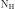
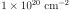
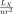
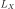
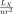
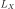
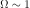
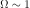
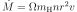
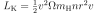

8.7. AGN winds¶
In many cases the emission from the central region around the black hole
is partly absorbed by the disk and/or wind. In the file agn.spo we have a spectrum showing a lot of absorption
lines. We set the distance to the source to 1 Mpc and the
 to .
Response file: corona.res.
This spectrum is too complicated to fit in one run. Therefore start fitting with just an absorbed power-law model to get the slope and normalization right.
Identify the absorption lines near 17.7 Å, 18.6 Å, 19.0 Å and 21.6 Å using the SPEX line list.
Now add a component called
slab(Slab: thin slab absorption model) to your model and free the ions which you identified in 2. You may want to increase the column density per ion to about (Note: the parameter in
(Note: the parameter in
slabis logarithmic). Do the same for the ions C VI and N VII. Is it a good fit?Near 15 Å there are a lot of lines associated with iron. Free the column density of Fe XIV to Fe XVII and fit again. Is the fit acceptable yet?
You can obtain a table with the optical depth of all the lines with the following command:
asc ter 1 3 tran(replace3in this command with your component number forslab). Write down the optical depth of the O VII and O VIII edge or save the output. Where are the O VII and O VIII edge in the plot? Also save or write down the column densities of O VII and O VIII. You need those later.Remove the
slabcomponent from your model and add a component calledxabs, which is a more physical model (Xabs: photoionised absorption model). Fit the spectrum again.If we zoom in on the lines, we see that they are blueshifted. Fit the parameter
zv. Provide a reasonable starting value forzvfirst. What is the speed of the absorber?Create the table with optical depths again with the command
asc ter1 3 tranandasc ter 1 3 colto get the column densities for every ion. Do you see differences with theslabmodel?The ionization parameter
xiis defined as follows: =
. Determine the luminosity () of
the source ( is the luminosity between 1 and 1000 Rydberg,
where 1 Rydberg = 13.6 eV) and calculate the density (n) if the wind
is at 1 pc from the source. Take care of units and logs.
=
. Determine the luminosity () of
the source ( is the luminosity between 1 and 1000 Rydberg,
where 1 Rydberg = 13.6 eV) and calculate the density (n) if the wind
is at 1 pc from the source. Take care of units and logs.Usually the density is estimated from variability arguments, which then allow one to put a limit on the distance of the absorber.
The impact of the outflow on its environment can be assessed as follows. Assume that the outflow has constant velocity
 (measured from your spectrum). The outflow is not fully spherical.
Usually people assume that the solid angle sustained by the outflow
.
(measured from your spectrum). The outflow is not fully spherical.
Usually people assume that the solid angle sustained by the outflow
.Then the total mass loss is  and the kinetic energy carried away per second is .
Calculate the kinetic energy carried away and compare to the ionising luminosity (you should do this offline from SPEX, but use the numbers from your fit). Is the kinetic energy significant compared to the radiated energy?
Learning goals:
After having done this spectrum, you should know:
How to use models for photo-ionised plasmas
How you can get more info out of SPEX by using the “asc” commands
Some basic parameters of black hole winds that can be derived from X-ray spectra